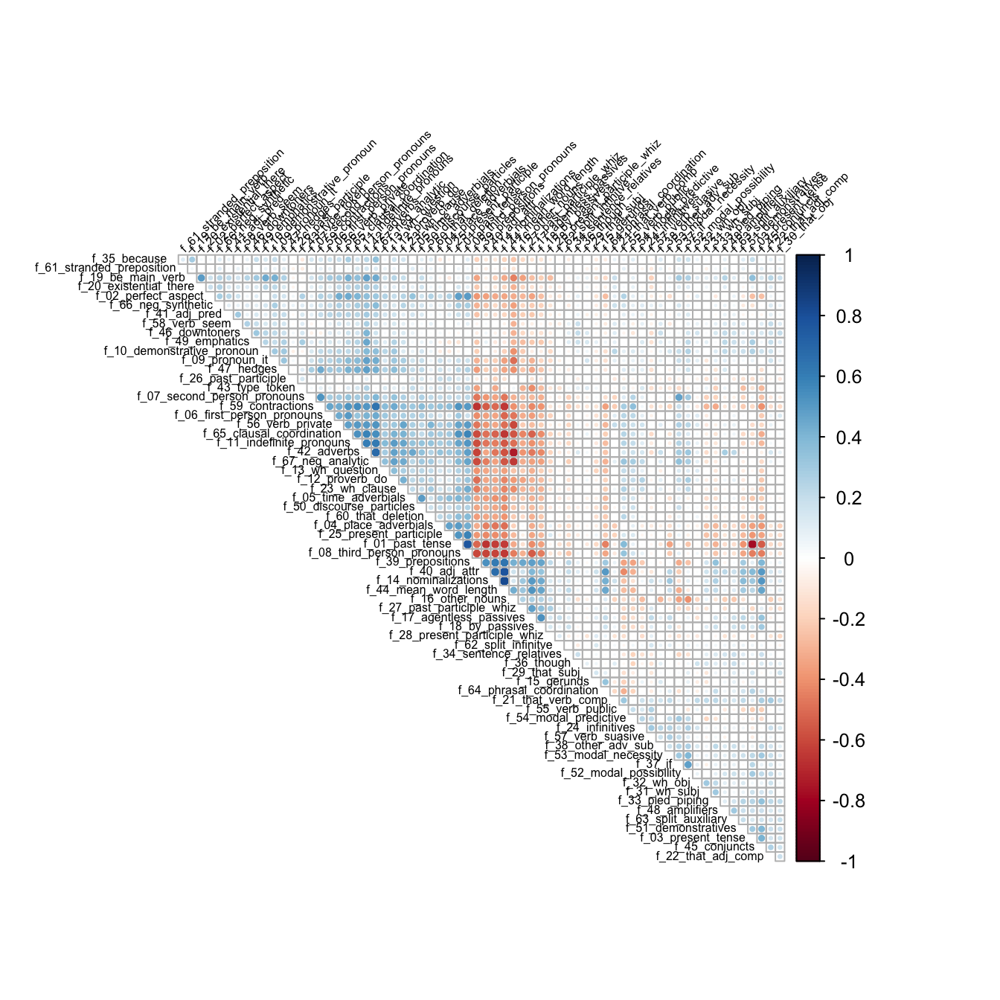
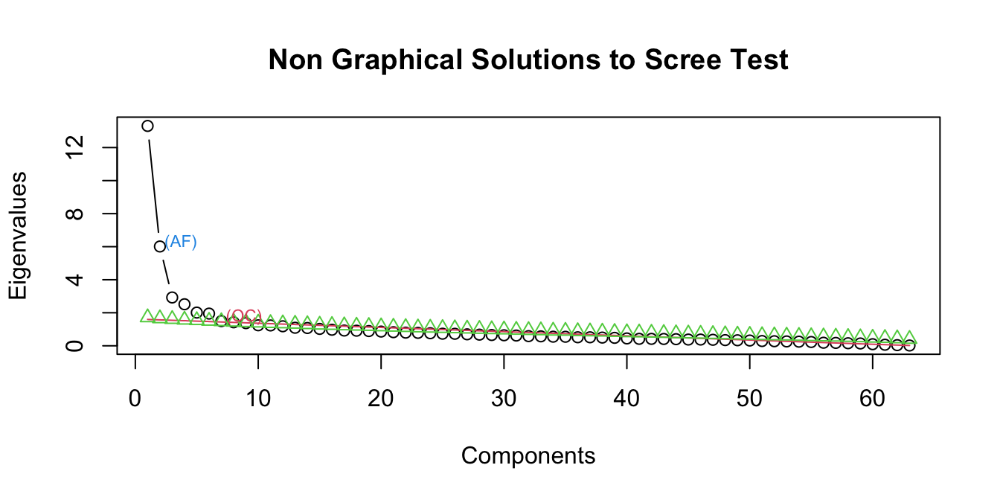
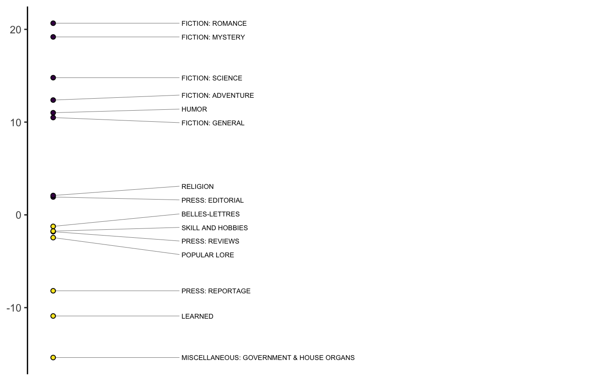
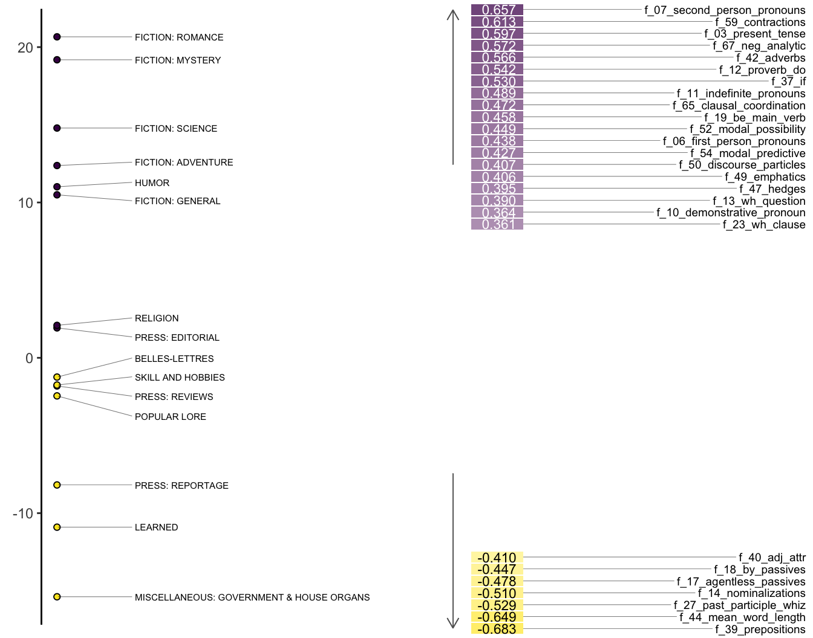
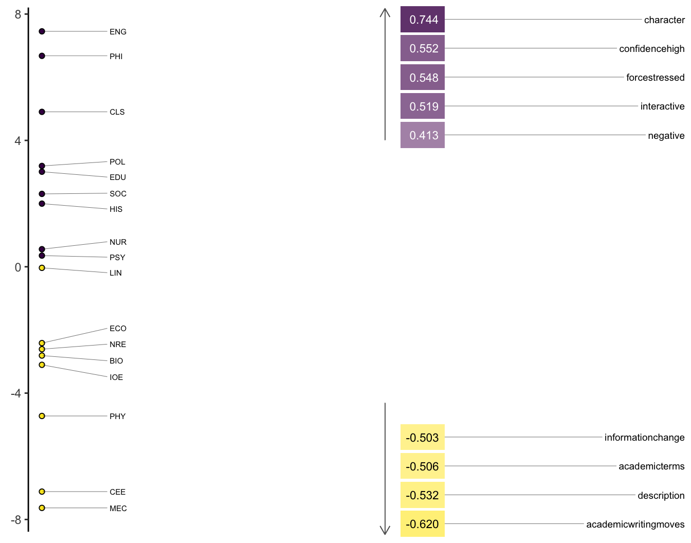

library(tidyverse)
library(quanteda)
library(nFactors)
library(gt)9 Multi-Dimensional Analysis
Multi-Dimensional Analysis (MDA) is a process made up of 4 main steps:
- Identification of relevant variables
- Extraction of factors from variables
- Functional interpretation of factors as dimensions
- Placement of categories on the dimensions
It is also a specific application of factor analysis. Factor analysis is a method(s) for reducing complexity in linguistic data, which can identify underlying principles of systematic variation (Biber 1988).
Load functions:
source("../R/mda_functions.R")9.1 Case 1: Biber Tagger
In order to carry out MDA, we would like to have 5 times as many observations than variables. This generally precludes carrying out MDA (or factor analysis) with simple word counts. We need data that has, in some way, been tagged.
For this lab, we will use data prepared using the R package pseudobibeR, which emulates the classification system that Biber has used and reported in much of his research. The package aggregates the lexicogrammatical and functional features widely used for text-type, register, and genre classification tasks.
The scripts are not really taggers. Rather, they use udpipe or spaCy part-of-speech tagging and dependency parsing to summarize patterns. They organize 67 categories that are described here:
https://cmu-textstat-docs.readthedocs.io/en/latest/pseudobibeR/pseudobibeR.html
For this lab, you won’t need to use the package functions. But if you’d like to try it out for any of your projects, you can follow the instructions here:
https://cmu-textstat-docs.readthedocs.io/en/latest/pseudobibeR/pseudobibeR.html
9.1.1 The Brown Corpus
Let’s start with counts from the Brown Corpus. The Brown family of corpora is discussed on pg. 16 of Brezina. You can also find more about it here:
http://icame.uib.no/brown/bcm.html
bc <- read_csv("https://raw.githubusercontent.com/browndw/cmu-textstat-docs/main/docs/_static/labs_files/data-csv/bc_biber.csv", show_col_types = FALSE)
bc_meta <- read_csv("https://raw.githubusercontent.com/browndw/cmu-textstat-docs/main/docs/_static/labs_files/data-csv/brown_meta.csv", show_col_types = FALSE)We will join the data with the metadata, in order to calculate dimension scores by register and evaluate them. Note that it must be formatted as a factor. For convenience sake, we’ll move the file names to the row names and put our factor as the first column.
bc <- bc %>%
left_join(dplyr::select(bc_meta, doc_id, text_type)) %>%
mutate(text_type = as.factor(text_type)) %>%
column_to_rownames("doc_id") %>%
dplyr::select(text_type, everything())9.1.2 Correlation matrix
Before calculating our factors, let’s check a correlation matrix. Note that we’re dropping the first (factor) column.
bc_cor <- cor(bc[-1], method = "pearson")corrplot::corrplot(bc_cor, type = "upper", order = "hclust",
tl.col = "black", tl.srt = 45, diag = F, tl.cex = 0.5)
9.1.3 Determining number of factors
Typically, the number of factors is chosen after inspecting a scree plot.
screeplot_mda(bc)
A common method for interpreting a scree plot is to look for the “bend” in the elbow, which would be 3 or 4 factors in this case. We can also look at the results of other kinds of solutions like optimal coordinates, which measures the gradients associated with eigenvalues and their preceding coordinates, and acceleration factor, which determines the coordinate where the slope of the curve changes most abruptly. In this case OC suggests 6 factors and AF 1.
For the purposes of this exercise, we’ll start with 3 factors.
9.1.4 Calculating factor loadings and MDA scores
In factor analysis factors so that they pass through the middle of the relevant variables. For linguistic variable it is conventional to use a promax rotation (see Brezina pgs. 164-167). There is also a nice explanation of rotations here:
https://personal.utdallas.edu/~herve/Abdi-rotations-pretty.pdf
To place our categories along the dimensions, data is standardized by converting to z-scores. For each text, a dimension score is calculated by summing all of the high-positive variables subtracting all of the high-negative variables. Then, the mean is calculated for each category.
For these calculations, we will use the mda_loadings() function.
bc_mda <- mda_loadings(bc, n_factors = 3)We can access factor loadings and group means through attributes.
attr(bc_mda, 'loadings')|>
rownames_to_column("Feature") |>
gt() |>
fmt_number(
columns = everything(),
decimals = 2
) |>
as_raw_html()| Feature | Factor1 | Factor2 | Factor3 |
|---|---|---|---|
9.1.5 Plotting the results
The means are conventionally positioned on a stick plot of the kind Brezina shows on pg. 169.
stickplot_mda(bc_mda, n_factor = 1)
We can also show the same plot with the factor loadings.
heatmap_mda(bc_mda, n_factor = 1)
9.1.6 Evaluating MDA
Typically, MDA is evaluated using ANOVA, reporting the F statistic, degrees of freedom, and R-squared. We can extract that information from a linear model.
f_aov <- aov(Factor1 ~ group, data = bc_mda)
broom::tidy(f_aov)# A tibble: 2 × 6
term df sumsq meansq statistic p.value
<chr> <dbl> <dbl> <dbl> <dbl> <dbl>
1 group 14 51553. 3682. 32.1 3.49e-60
2 Residuals 485 55651. 115. NA NA gtsummary::tbl_regression(lm(Factor1 ~ group, data = bc_mda)) |>
gtsummary::add_glance_source_note() |>
gtsummary::as_gt() |>
as_raw_html()Characteristic |
Beta |
95% CI |
p-value |
|---|---|---|---|
R² = 0.481; Adjusted R² = 0.466; Sigma = 10.7; Statistic = 32.1; p-value = <0.001; df = 14; Log-likelihood = -1,888; AIC = 3,807; BIC = 3,874; Deviance = 55,651; Residual df = 485; No. Obs. = 500 |
|||
| 1 CI = Confidence Interval |
|||
gtsummary::tbl_regression(lm(Factor2 ~ group, data = bc_mda)) |>
gtsummary::add_glance_source_note() |>
gtsummary::as_gt() |>
as_raw_html()Characteristic |
Beta |
95% CI |
p-value |
|---|---|---|---|
R² = 0.662; Adjusted R² = 0.652; Sigma = 5.82; Statistic = 67.7; p-value = <0.001; df = 14; Log-likelihood = -1,582; AIC = 3,196; BIC = 3,264; Deviance = 16,404; Residual df = 485; No. Obs. = 500 |
|||
| 1 CI = Confidence Interval |
|||
gtsummary::tbl_regression(lm(Factor3 ~ group, data = bc_mda)) |>
gtsummary::add_glance_source_note() |>
gtsummary::as_gt() |>
as_raw_html()Characteristic |
Beta |
95% CI |
p-value |
|---|---|---|---|
R² = 0.273; Adjusted R² = 0.252; Sigma = 6.76; Statistic = 13.0; p-value = <0.001; df = 14; Log-likelihood = -1,657; AIC = 3,346; BIC = 3,414; Deviance = 22,146; Residual df = 485; No. Obs. = 500 |
|||
| 1 CI = Confidence Interval |
|||
9.2 Case 2: DocuScope
Unlike the Biber tagger, DocuScope is a dictionary based tagger. It has been developed at CMU by David Kaufer and Suguru Ishizaki since the early 2000s. A small version of it is on Canvas, which you can download. You can find the dictionary categories described here:
https://docuscospacy.readthedocs.io/en/latest/docuscope.html#categories
9.2.1 Load the dictionary
load("../data/ds_dict.rda")
load("../data/micusp_mini.rda")DocuScope is a very large dictionary (or lexicon) that organizes tens of millions of words and phrases into rhetorically oriented categories. It has some overlap with a few Biber’s functional categories (like hedges), but is fundamentally different, as it isn’t bases on parts-of-speech.
The ds_dict is a small quanteda dictionary that organizes a smaller set of words of phrases (tens of thousands rather than tens of millions). Here is a sample from 3 of the categories:
ds_dict[1:3]Dictionary object with 3 key entries.
- [AcademicTerms]:
- a chapter in, a couple, a declaration of, a detail, a distinction between, a domain, a force, a forced, a form of, a grade, a hint of, a home for, a hub, a kind of, a kind of a, a load, a loaded, a metaphor for, a mix of, a mixture of [ ... and 8,884 more ]
- [AcademicWritingMoves]:
- . in this article ,, . in this paper, . this essay, . this paper, . this report, . this work, . to avoid, a better understanding, a common problem, a debate about, a debate over, a first step, a goal of, a great deal of attention, a huge problem, a key to, a major problem, a method of, a notion that, a number of studies [ ... and 1,141 more ]
- [Character]:
- ; block, ; bring, ; call, ; center, ; check, ; chill, ; close, ; color, ; control, ; cook, ; cool, ; cover, ; cross, ; cut, ; design, ; discard, ; don, ; down, ; drain, ; e-mail [ ... and 18,754 more ]9.2.2 Tokenize the corpus
Again, we will use the **micusp_mini*, and we’ll begin by tokenizing the data. Note that we’re retaining as much of the original data as possible including punctuation. This is because our dictionary includes punctuation marks in it’s entries.
micusp_tokens <- micusp_mini %>%
corpus() %>%
tokens(remove_punct = F, remove_numbers = F, remove_symbols = F, what = "word")Next, we will use the tokens_lookup() function to count and categorize our features.
ds_counts <- micusp_tokens %>%
tokens_lookup(dictionary = ds_dict, levels = 1, valuetype = "fixed") %>%
dfm() %>%
convert(to = "data.frame") %>%
as_tibble()Finally, we need to normalize the counts. Because DocuScope is not categorizing ALL of our tokens, we need a total count from the original tokens object.
tot_counts <- quanteda::ntoken(micusp_tokens) %>%
data.frame(tot_counts = .) %>%
tibble::rownames_to_column("doc_id") %>%
dplyr::as_tibble()
ds_counts <- dplyr::full_join(ds_counts, tot_counts, by = "doc_id")Now we can normalize by the total counts before preparing the data for factor analysis.
ds_counts <- ds_counts %>%
dplyr::mutate_if(is.numeric, list(~./tot_counts), na.rm = TRUE) %>%
dplyr::mutate_if(is.numeric, list(~.*100), na.rm = TRUE) %>%
dplyr::select(-tot_counts)
ds_counts <- ds_counts %>%
mutate(text_type = str_extract(doc_id, "^[A-Z]+")) %>%
mutate(text_type = as.factor(text_type)) %>%
column_to_rownames("doc_id")9.2.3 Calculating factor loadings and MDA score
Again, we will use 3 factors.
micusp_mda <- mda_loadings(ds_counts, n_factors = 3)9.2.4 Evaluating MDA
We can again check to see how explanatory our dimensions are.
gtsummary::tbl_regression(lm(Factor1 ~ group, data = micusp_mda)) |>
gtsummary::add_glance_source_note() |>
gtsummary::as_gt() |>
as_raw_html()Characteristic |
Beta |
95% CI |
p-value |
|---|---|---|---|
R² = 0.646; Adjusted R² = 0.609; Sigma = 3.36; Statistic = 17.5; p-value = <0.001; df = 16; Log-likelihood = -438; AIC = 912; BIC = 969; Deviance = 1,722; Residual df = 153; No. Obs. = 170 |
|||
| 1 CI = Confidence Interval |
|||
gtsummary::tbl_regression(lm(Factor2 ~ group, data = micusp_mda)) |>
gtsummary::add_glance_source_note() |>
gtsummary::as_gt() |>
as_raw_html()Characteristic |
Beta |
95% CI |
p-value |
|---|---|---|---|
R² = 0.506; Adjusted R² = 0.454; Sigma = 3.96; Statistic = 9.78; p-value = <0.001; df = 16; Log-likelihood = -466; AIC = 969; BIC = 1,025; Deviance = 2,405; Residual df = 153; No. Obs. = 170 |
|||
| 1 CI = Confidence Interval |
|||
gtsummary::tbl_regression(lm(Factor3 ~ group, data = micusp_mda)) |>
gtsummary::add_glance_source_note() |>
gtsummary::as_gt() |>
as_raw_html()Characteristic |
Beta |
95% CI |
p-value |
|---|---|---|---|
R² = 0.387; Adjusted R² = 0.322; Sigma = 3.02; Statistic = 6.03; p-value = <0.001; df = 16; Log-likelihood = -420; AIC = 877; BIC = 933; Deviance = 1,398; Residual df = 153; No. Obs. = 170 |
|||
| 1 CI = Confidence Interval |
|||
9.2.5 Plotting the results
And we can plot the first factor.
heatmap_mda(micusp_mda, n_factor = 1)
9.2.6 Interpreting the factors as dimensions
The functional interpretation of factors as dimensions (Brezina pgs. 167-168) is probably the most challenging part of MDA. As analysts, we need to make sense out of why features (whether parts-of-speech, rhetorical categories, or other measures) are grouping together and contributing to the patterns of variation evident in products of the analysis.
That interpretation usually involves giving names to the dimensions based on their constituent structures. In Biber’s original study, he called his first, most explanatory dimension Involved vs. Informational Production. At the positive (Involved) end of the dimension are telephone and face-to-face conversations. At the negative (Information) end are official documents and academic prose.
Features with high positive loadings include private verbs (like think), contractions, and first and second person pronouns. Features with high negative loadings include nouns and propositional phrases. Biber concludes that these patterns reflect the communicative purposes of the registers. Ones that are more interactive and affective vs. others that are more instructive and informative.
In order to understand how certain features are functioning, it is important to see how they are being used, which we can do effienciently with Key Words in Context (KWIC). Here we take “Confidence High” from the positive end of the dimension and “Academic Writing Moves” from the negative.
ch <- kwic(micusp_tokens, ds_dict["ConfidenceHigh"])
awm <- kwic(micusp_tokens, ds_dict["AcademicWritingMoves"])Code
ch |>
head(10) |>
gt() |>
as_raw_html()| docname | from | to | pre | keyword | post | pattern |
|---|---|---|---|---|---|---|
Code
awm |>
head(10) |>
gt() |>
as_raw_html()| docname | from | to | pre | keyword | post | pattern |
|---|---|---|---|---|---|---|
10 Works cited
Biber, Douglas. 1988. Variation Across Speech and Writing. Cambridge University Press. https://doi.org/10.1017/CBO9780511621024.